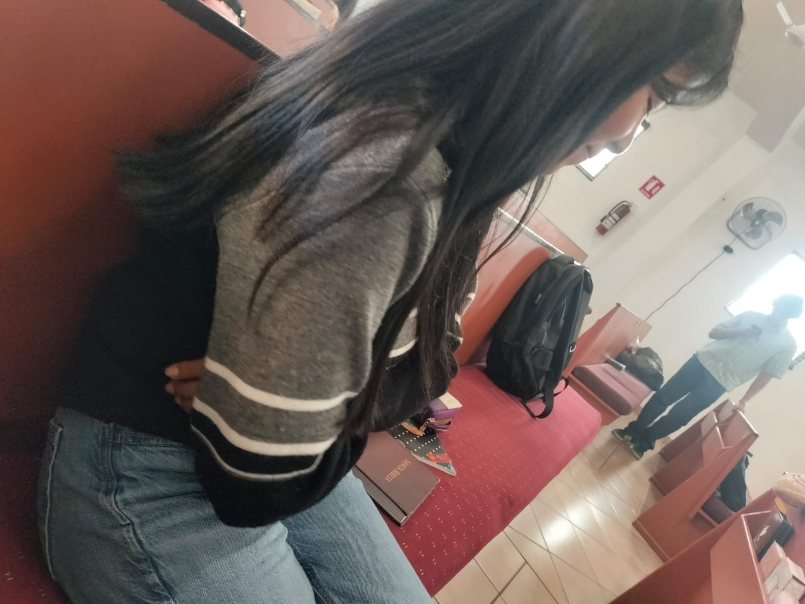
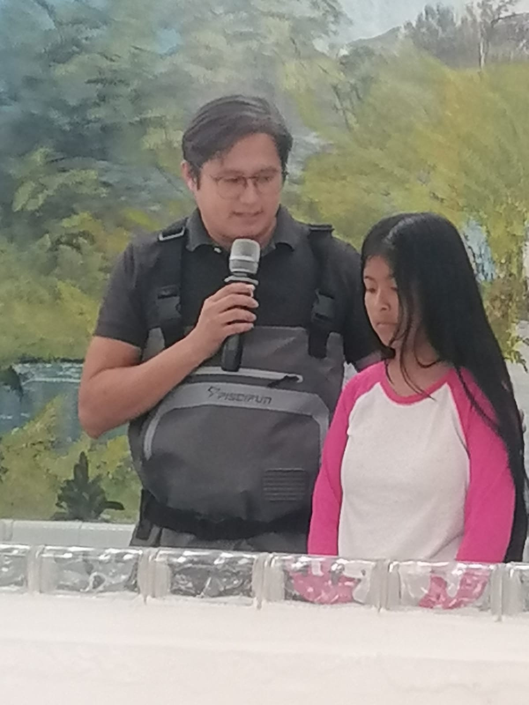
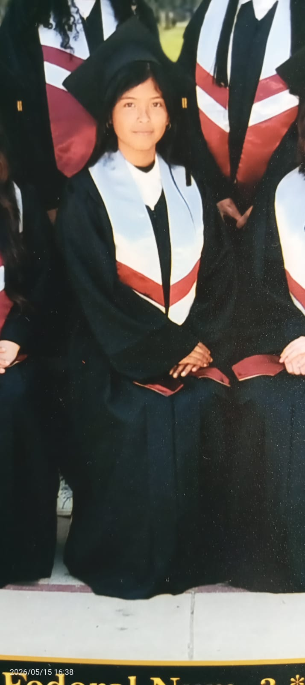
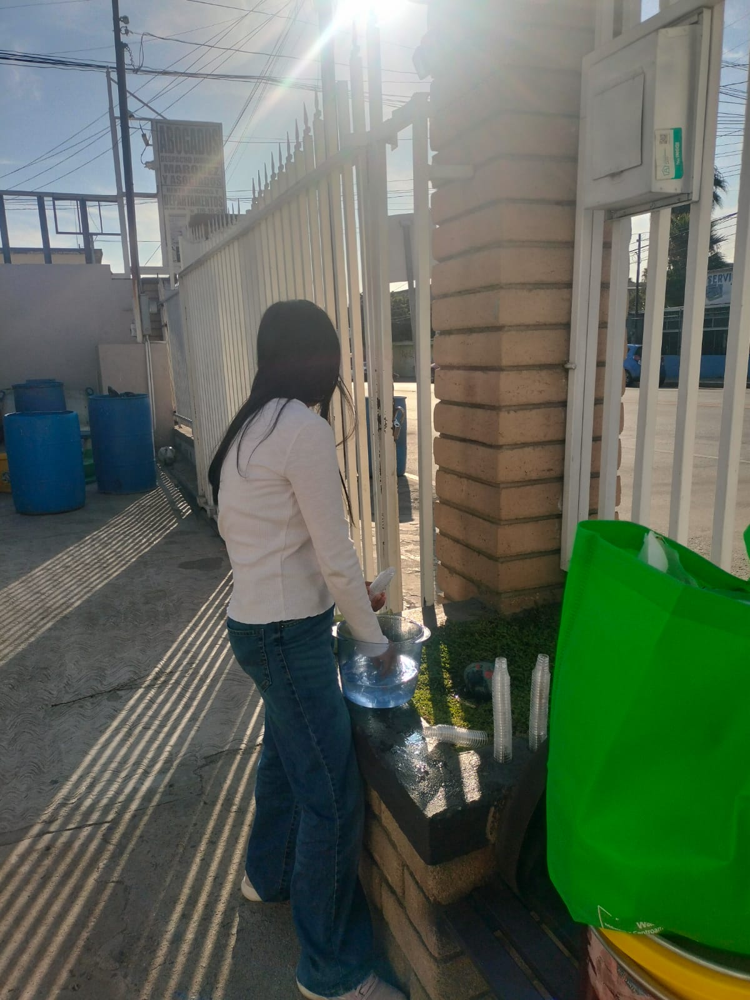
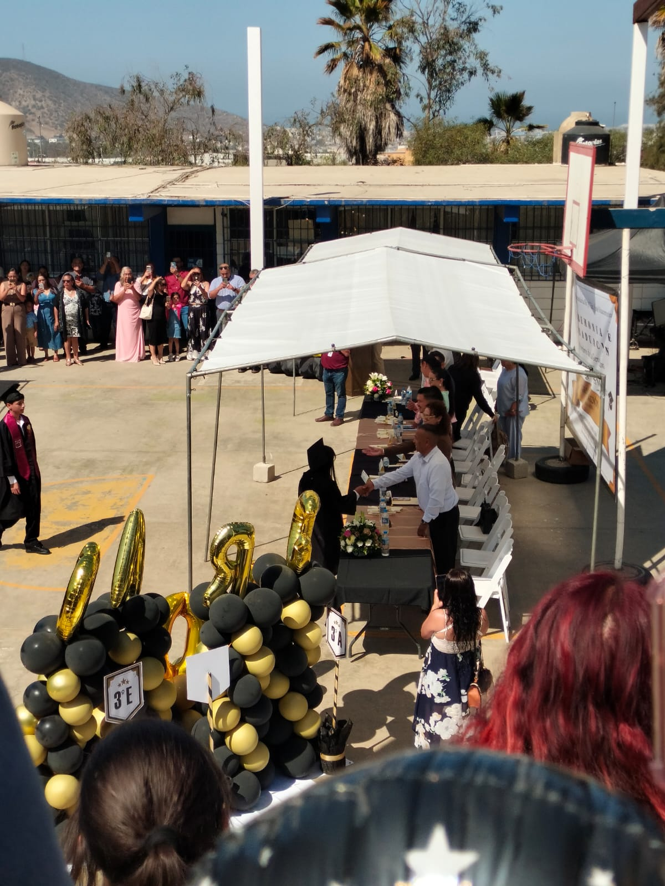

Un mensaje introductorio para mi mejor amiga y hermana en la fe: generalmente soy pesimo para hacer este tipos de cosas, hablando especificamente acerca de los "diarios", debido a que no tengo imaginacion ni creatividad o siquiera habilidades artisticas, pero admito que estoy muy animado por hacerlo, aunque quede todo feo y aburrido, al menos sera algo mio para poder recordar nuestras aventuras, bromas pesadas, jalones de cabello, pellizcos y momentos especiales que lo mas probable... es que solo podre tener contigo, tal vez en algun momento de mi vida haya alguien mas, no lo se, solo Dios sabe, pero sabes?... yo preferiria que no. Preferiria no tener a otra mejor amiga y hermana como tu, para que asi JAMAS tenga el motivo o la excusa de olvidar todos los momentos que pasamos, estamos pasando y si Dios permite... seguiremos pasando, al menos hasta antes de que te vayas, le suplicare a Dios para que si en algun momento me llegara a descuidar y me olvido de ti... que alguien me pellizque, que alguien se burle de mi como solo tu sabes hacerlo, para que mi mente vuelva a recordar, a la maravillosa persona que conoci un dia, no recuerdo cuando fue, tampoco la razon de porque te dirigi la palabra, pero en definitiva, fue una de las pocas decisiones en mi vida de las que no me he arrepentido, realmente soy mucho mas feliz que antes, y eso es gracias a ti, principalmente a Dios debo agradecer, claro, pero estoy seguro que cruzo nuestros caminos, para que juntos avanzaramos, siempre es bueno tener compañia, esa persona especial en tu vida que te empuja cuando te quedas quieto en el camino, que te saca del bache cuando caes en el, que te anima a seguir adelante cuando nadie mas lo hace, al menos no tan significativamente como el o ella, en mi caso... ella, Tu :], gracias por formar parte de ese circulo de personas que amo con todo mi corazon, mi apariencia no es la mas confiable, me atreveria a decir que la gente al verme nunca pensaria que soy cristiano, (hablando unicamente de mi aspecto), ya que mi cara de "teniente mal pagado" no me ayuda en nada, menos con las ojerotas que traigo que parece que fuera un fumador compulsivo, pero a pesar de todo... aqui sigues, me sigues hablando, me sigues pellizcando, y eso... esas son las cosas que al menos para mi, es oro, me da igual los regalos costosos, o la ropa de marca, o que me dediquen un poema magnifico, tus acciones son las que verdaderamente me haran saber si soy realmente importante para ti o no, y creo, al menos en lo que he visto y notado, que soy importante para ti, asi que por ello, muchas gracias, esto que hago, es para ti, y para mi, para el dia en que ya no pueda ver mas tu rostro, me consuele al recordar todo aquello que Dios nos permitio compartir y aunque probablemente llore mucho cuando te vayas, al menos tendre el consuelo de que ya no estas sola, ahora tienes a Dios, y espero que NUNCA te olvides, de lo que Dios ha hecho en tu vida, se que ha sido duro, duele, a veces dan ganas de gritar, de correr, de golpear, de soltarlo todo, de tirar la toalla, tal vez incluso, quitarse la vida, pero, de un joven lastimado a una jovencita lastimada, te digo que... la peor decision que puedes tomar en tu vida, la mas insensata y tonta, es quitarte la vida y despreciar el regalo mas hermoso que Dios te ha dado, porque si hoy te han sucedido cosas malas en tu vida, es para que se cumplan los propositos de Dios, se que es confuso, se que es dificil de creer, pero esto es asi, a veces Dios permite que seamos atacados, humillados, ultrajados, para que asi, finalmente, podamos entregar un corazon flojo y sin fuerzas, al unico que nos puede consolar mas que cualquier ser humano, nuestro Dios y Padre celestial, te quiero mucho, te deseo lo mejor de lo mejor siempre, ojala y cuando te vayas, nos permita el Señor despedirnos apropiadamente o incluso, volver a reencontrarnos en algun momento de nuestras vidas, creo que nada me haria mas feliz que irme con esa ilusion, saber que tal vez, solo tal vez, nuestros caminos se vuelvan a cruzar, como ese dia tan hermoso en que una decision tan sencilla y comun de hablarte como a cualquier otra jovencita, cambio mi vida radicalmente, gracias, Επαφροδιτα, con mucho amor, respeto y una profunda admiracion de mi parte hacia ti, te dedico todo esto, el Señor sea testigo de cuan importante eres para mi, amen, y amen.

Un dia tan importante nunca debe de ser olvidado, despues de todo.. fue, es y sera siempre la decision mas importante de tu vida, y desde luego, la mas indicada :]. Me alegre mucho al saber por el grupo de WhatsApp que alguien se iba a bautizar, que habia tomado esa decision tan acertada e importante, pero al saber que eras tu, admito que chille internamente como una naca en concierto de Romeo Santos, algunos dicen que me veo muy "serio" o "maduro", pero a veces puedo ser tan infantil como no tienes una idea, especialmente con aquellos en los que confio plenamente, como tu. Me alegro haberlo visto, al menos por zoom, fue divertido verte toda mojada, ojala te hubiera bautizado yo, asi te hubiera dado otra chapoteada nomas de puro cariño, pero me alegre mucho y hasta el dia de hoy por lo que decidiste hacer en ese dia, NUNCA pienses que fue una decision incorrecta o innecesaria, eso fue lo mejor, y Dios traera el consuelo en las tristezas, el descanso despues de esos momentos frustrantes, amada hermana, como tu hermano en la fe, te ofrezco mi apoyo espiritual y fisico cuando tu lo necesites, en donde sea, cuando sea, como sea, mientras Dios me de vida, espero poder estar alli para ti, de la misma manera en que alguna vez, hubo alguien alli para mi cuando mas lo necesitaba.

Realmente tengo muchas ganas de estar en tu graduacion, seria muy especial para mi poder ver como finalizas esa etapa de tu vida, para mi, generalmente seria como un certificado mas para el folder escolar, nada especial, pero solo porque se trata de ti, eso es lo que lo vuelve super importantisimo y especial, espero que sea Dios quien ponga los medios para que se pueda realizar conforme a nuestros deseos y claro, que principalmente seas tu quien lo disfrutes, espero que no te desmayes a medio recoger tu certificado, si no que realmente lo hagas con la satisfaccion de saber que te esforzaste, que le echastes todas las ganas, que diste todo de ti para cumplir excelentisimamente, no solamente con tus maestros, con tus tutores, con tus amigos, sino tambien incluso, para Dios, recordando que todo debemos hacerlo como para El, asi que, enorgullecete niña, lo has logrado, has vencido, y eres la campeona.

21 de Junio de 2026, festejaron a los padres, por ser... bueno, el dia del padre, evidentemente, un convivio como muchos que ha habido en la congregacion, pero para nosotros fue mucho mas que eso, fue la oportunidad de poder interactuar como todos unos ninjas astutos sin sentir tanta presion de miradas innecesarias, dramas, chismosos y chismosas ah y claro, unos buenos regaños por parte de ciertas personas, despues del mensaje que me enviaste el miercoles por la tarde... admito que se me bajo la presion, la impotencia y la frustracion se mezclaron esa noche y amenazaban por desbordarme, queria golpear algo, a alguien, lo que sea que me ayudara a desahogarme al menos un poco, pero como ya es habitual, no pude, mi papa me vio manejar inusualmente mas rapido y violento de lo normal, pero no dijo nada, llegamos y me meti a bañar, me puse directo bajo el chorro de agua fria y me puse a llorar, que mas podia hacer?, nunca he tenido la oportunidad de decir lo que quiero decir, asi que... ese es mi escape, ese es mi desahogo, mis lagrimas, sali, me cambie, me fui a mi cuarto y trate de dormir para olvidar la sensacion que sentia, no pude, me sente en la cama e hice oracion, finalmente me calme y me resigne amargamente a lo que acababa de pasar, agarre el celular y volvi a leer el mensaje, la forma en que lo escribiste, las palabras exactas, todo lo examine en segundos en mi cabeza, y llegue a una conclusion, tu no habias escrito eso por voluntad propia. No habia forma, te conozco, se como hablas, tanto en persona y mas aun por escrito, aunque solo veia las letras con mis ojos, sonabas apresurada, tensa, y pense: "Y ahora que paso?"... pero ya que me contaste, admito que fue completamente liberador, al menos ya no tengo ese pendiente, gracias por dejarme acompañarte, fue grato platicar contigo otra vez, tambien porque pudimos pasar un ratito cerca, se que ahora sera mas dificil, pero no importa, cualquier pequeño momento valdra la pena verte, gracias por no dejarme morir de tristeza despues de mis bromas pesadas, si en una de esas te enojas de verdad y me dejas de hablar me va a dar depresion :'D, asi que gracias por aguantarme y hacerme compañia. [...] Ah y... si, aun me acuerdo del 19 de abril, y recuerdo facilmente porque ese fue el dia en que ya no pude mirarte a los ojos :"D, tenia mucho miedo de arruinar lo que ya llevabamos de amistad y no se, imagine lo peor, realmente pense que en el momento en que leyeras la nota no volverias a hablarme o te daria asco, no se, pero cuando te acercastes por detras y me diste la nota cuando estaba sentado en la banca con los chamacos... casi se me sube la sangre al cerebro cuando me dijistes: "Ya lo lei", nombre, queria que el suelo me tragara vivo, apenas tuve chance me fui a leer la nota, (ya sabes donde la lei), y admito que ese dia por la noche no pude dormir rapido, tarde varios minutos en dormir porque mi cabeza no paraba de darle vueltas y vueltas a lo que habia hecho ese dia, nunca antes me habia enamorado, JAMAS, ni una sola, a todas las ignoraba, a muchas las detestaba por como eran de... "resbalosas" en el primer cholo que veian pasar por la banqueta, pero de la nada apareciste tu, una feota que nunca se ducha y siempre huele increiblemente mal y empece a ponerme nervioso cuando te acercabas, me afectabas en todo, mi mente traicionera volvia a recordar las veces que te habia hecho reir y no me dejaba concentrarme en nada, lo acepto, estoy locamente enamorado, como jamas estuve antes y espero jamas volver a estarlo, P.D: Esto te lo digo con todo el respeto que te mereces como mujer y hermana en la fe, sin malas intenciones ni pensamientos fuera de lugar, genuinamente creo que eres muy linda, amo tu carita, me dan ganas de agarrarte los cachetes y darte abrazos que duren minutos, pero no solamente es fisico esto, tienes una personalidad que me fascina, una forma de hacer, decir, y comportarte que me agrada mucho, tu presencia es silenciosa, pero ironicamente, eres la presencia mas ruidosa en mi vida, porque eres la unica que no puedo sacar de mi cabezota, nunca podre ser nada mas que tu amigo y hermano en la fe, ya me resigne a eso, pero al menos queria que lo supieras, gracias por no juzgarme y por darme la hermosa oportunidad de sentirme como un adolescente enamorado, (ya me sonroje), bai.
Tu animal favorito, desde que supe que te gustaban cada que veo una imagen, o un peluche, o una referencia a ello me acuerdo de ti. Por otro lado, a mi me gustan los pandas, creo que ademas de ser adorable me parezco mucho a ellos, (solo busca uno y compara xd).
Es curioso que te guste algo tan brillante y perfectamente creado por Dios, porque de la misma manera lo eres tu. A mi me encanta el espacio igualmente, hay cientos de cosas gigantescas que me parecen una hermosura total, una gran prueba de como Dios crea todo perfectamente.
El silencio para muchos es aburrido, pero que para ti sea agradable dice mucho de ti como persona, yo te describiria como una persona... profunda. Yo disfruto tambien del silencio, pero durante el mismo, me gusta aun mas pensar en voz alta y platicar conmigo mismo, acerca de ciertas cosas que me son importantes.
A ti te gusta sacar buenas calificaciones, eres como la "inteligente del salon", algo muy bueno. Aunque a diferencia de ti, para mi no es TAN necesario sacar nueves o dieces en cada boleta, suelo ser bastante irresponsable y no le echo muchas ganas en realidad, jeje, perdon.
Tu color favorito es verde y azul, dos colores de los 3 primarios, nomas falto el rojo, a mi me gustaban esos tres antes. A mi me encanta el color negro, creo que es elegante y puedes combinar muy buenos conjuntos con este color, (y no, no soy emo).
Tu deporte favorito es voleyball, ironico, porque tu tamaño no llega ni al comienzo de la red, (es broma no te enojes :'D). A mi me gusta mucho un deporte que se llama... existir, me encanta jugarlo las 24/7, es muy divertido y emocionante y practicamente no te cansas ni sudas nadota.
Aun recuerdo cuando nos dabamos el tiempo de ver las peliculas, estuvo genial esos momentos. A mi me gustan mas los animes, hay muchos que disfruto ver y algunos incluso repetir otra vez.
No sabia que te gustaba la musica, es relajante, bueno, depende de que genero escuches. A mi me encanta escuchar musica, todo el rato ando escuchando con mis audifonos, odio el reggueton, la bachata y los corridos, asco xd.
No hay mucho que decir aqui, simplemente delicioso, que ricooooooooo.
No me lo esperaba, la verdad que no, crei que no eras capaz de ver el progreso de la pagina, tenia el plan que fuera sorpresa pero la sorpresa me la lleve yo... aunque no me molesta ni nada, solo.. me dio pena, porque ya leiste lo que puse sobre el 21 de junio y pues, en fin, pero bueno, realmente en algun momento lo ibas a leer asique... ya que mas da, espero que no te hayas incomodado al leerlo, trate de expresarme de la manera mas respetuosa que podia, porque mi mayor temor es que algun dia me mires con asco, con miedo, con ira, o con indiferencia, porque desde ese dia voy a estar muerto en vida...
Domingo 05 de julio de 2026, ha sido, sin duda alguna, el domingo mas especial de todos, realmente me encanto, ame estar contigo todo el rato, de verdad, fue tan comodo y divertido, no lo sabes, pero en realidad ya nos ibamos a ir, queria ir a casa a descansar ya, le dije a mi papa y pues aunque no estaba deacuerdo empezo a despedirse pero como parecia que se iban a quedar, pues mejor le dije que no a mi papa xd, y valio la pena quedarse, absolutamente, sin duda alguna, ese ha sido el regalo de cumpleaños mas especial, mas hermoso y mas memorable de todos estos años en los que he recibido todo tipo de regalos, saludos, elogios, y otras cosas. Por fin pudimos volver a abrazarnos! yupiiiiiiiiiiiiiiii, no sabes lo feliz que me puse cuando pude abrazarte la primera vez de ese dia, pero cuando volviste a abrazarme empece a ponerme nervioso, al tercero me sentia dulcemente mareado, al cuarto queria darle un besote a la Silvestra de la emocion, al quinto queria correr como un atleta olimpico por toda la calle de la cortez, y al sexto... al sexto queria chillar de lo feliz que estaba, de verdad, fue... incluso mas grato que los dos abrazos pasados que habiamos tenido, fueron mas largos, mas fuertes, mas... unicos, me encanto, ojala se repita otra vez, quiero darte muchos mas, y que cada uno dure aun mas, (mientras tu te sientas comoda con eso), ese dia andaba bien sudado, no queria pegarte el mal olor pero... a la vez no queria perderme la oportunidad que estaba frente a mi, asi que por ello gracias, por arriesgarte a hacerlo solo por mi, en verdad, gracias hermanita, te adoro, eres la mejor. Que sepas que tu presencia JAMAS ha sido incomoda, o fastidiosa, no me importa pasar todo el dia contigo, para mi es el tiempo que paso contigo es unico, irrepetible, es una adiccion, es como una droga de la que no necesito ni quiero despegarme, asi que si alguna vez deseas hablar conmigo, en donde este, con quien este, me veas como veas, aunque me veas en modo: "mirame y te estrangulo", por favor, hablame, quiero volver a sentir mariposas en el estomago, bueno, para mi es mas como caimanes voladores por los nervios, pero si, amo esa sensacion, amo tu presencia, y quiero pasar el resto del tiempo que nos quede... contigo y solo contigo, asi que, con cariño, mucho respeto y una devocion interna inexplicable, te digo.. gracias, apestosa.
(11 DE DICIEMBRE DE 2025): "Ya duermete mejor" -Yo
(15 DE DICIEMBRE DE 2025): "Bañateeeee" -Tu
(25 DE DICIEMBRE DE 2025): "Menso" -Tu
(04 DE ENERO DE 2026): "Apestosa suprema" -Yo
(04 DE ENERO DE 2026): "Fea" -Yo
(16 DE MAYO DE 2026): "Se te van a llenar de aire los pulmones" -Yo

15 de Julio de 2026, finalmente llegada la fecha esperada, la verdad si tenia miedo, pense que no iba a poder acompañarte en este evento tan importante, pero bendito sea Dios que El puso los medios para que pudiera estar alli contigo, estrechar tu mano y decirte... "Felicidades". Y te lo repito nuevamente, lo hiciste increible apestosa, te has ganado todos los elogios, los abrazos y el reconocimiento del mundo, no es la hazaña mas grande de la vida cursar la secundaria, pero es un escalon, es un logro unico, tuyo, yo recuerdo que sali con 8.8 de la Cq, xd, nunca fui el inteligente, y admito que salir con 9.5, es muy bueno, aunque se que te hubiera gustado salir con 10 o incluso con diploma, la realidad, o al menos lo que yo pienso acerca de eso es que... si, es muy bueno sacar diplomas, pero incluso si salistes de ese lugar sin uno, tu sigues siendo la misma jovencita inteligente, valiente, decidida y esforzada que siempre has sido y que, te invito, a que sigas siendo, asi que muchas felicidades, en serio, me alegro mucho estar alli y verte un poco apenada, porque en lo que a mi respecta es bastante adorable verte asi, gracias por invitarme, yo la verdad no soy de las personas que asisten a eventos, incluso aunque me inviten, pero como muchas cosas en la vida, hay excepciones especiales, y tu eres la mayor excepcion en mi vida, te quiero mucho, te admiro mucho y quiero que tengas siempre en tu mente, que nosotros somos mandados a amarnos a nosotros mismos, no solamente a los demas, sino propiamente, nunca digas o pienses cosas como: "que tonta soy", "soy un fracaso", "no sirvo para nada", "no vale la pena esforzarse", mira, te lo digo por experiencia, solo te vas a amargar la vida, y no vas a conseguir nada bueno con eso, aunque no lo creas, hay estudios reales cientificos que demuestran que una persona que piensa asi todo el tiempo o muy amenudo, termina volviendose asi, inutil, torpe, incompetente, porque aunque parezca bobo, el cerebro hace lo que sale por la boca, si tu hoy dices que eres una tonta, mañana tu cerebro hara TODO LO POSIBLE para confirmar eso que ha salido de tu boca, asi que valorate tal y como eres mi adorable hermanita, no somos perfectos, y todos tenemos cosas que cambiar y otras cosas que mejorar, pero lo que importa realmente es el esfuerzo que nosotros le ponemos a las cosas, como tu lo hiciste, en este caso, academicamente hablando, muy bien hecho niña, te felicito, estoy muy orgulloso de poder decir: "ella es mi mejor amiga y hermana en la fe", para que la gente no tenga duda alguna de quien es la estrella que mas brilla en el "espacio" de mi corazon... P.D: te debo dos gansitos :].
Ensenada, Baja California, 16 de Julio de 2026.
A mi mejor amiga y hermana en la fe.
A lo largo del tiempo en la que me he pasado hablando contigo, me he expresado de distintas maneras, de distintos temas, pero esta vez, esta vez es algo distinto, esto es unicamente sobre ti, sobre lo que tu sabes que siento desde el fondo de mi corazon... espero lo disfrutes. [...] El dia de hoy, 16 de Julio de 2026, que estoy escribiendo esto, siento una mezcla de inspiracion exagerada y una profunda necesidad de demostrarte lo importante que es para mi esto, y el gran significado que tiene en mi vida. A muchos se les da el dedicar palabras en persona, el hablar de una manera que atrae a las personas, no es mi caso, me atreveria a decir que soy totalmente lo contrario, soy terrible hablando en persona, creo que me desempeño de una mejor manera a traves de la escritura, cuando tengo el tiempo y me pongo a pensar, es donde vienen las ideas, las palabras, todo, soy alguien que desde hace unos 3-4 años se ha vuelto muy reflexivo, cada momento en que estoy solo en mi casa, al menos una vez me pongo a pensar en voz alta, acerca de muchas cosas, acerca de mis decisiones, acerca de mis acciones, de mi actitud, de mis amig@s, de todo un poco... y lo hago porque eso me ayuda a ver mis deficiencias, lo que necesito cambiar o simplemente mejorar, y... hace aproximadamente 4 meses, un pensamiento vino a mi cabeza, "¿cuando y porque le hable?...", haciendo referencia a ti, es una pregunta que me carcome la cabeza a veces, realmente me encantaria recordar la primera vez en que te hable, la primera vez en que te salude, como quisiera volver en el tiempo para poder haberlo hecho desde el primer dia en que llegaste a la congregacion, nunca imagine que encontraria a una persona tan encantadora, y menos aun, que llegara a ser mi amiga mas intima, porque todo lo que juntos hemos logrado y hecho, mi estimada Julia, hasta el dia de hoy, me ha cambiado la vida, radicalmente, cada pequeño momento despues de eso, cada mirada, cada saludo, cada platica, cada pellizco, cada chiste, por mas malo que fuera, se volvio... lo mas especial que habia vivido hasta el momento, como si todo lo demas no importara, como si simplemente mi vida se hubiera vuelto una habitacion oscurecida, en la que dentro... lo unico que brillaba... eras tu, creo que desde que tenia 10 años, no habia vuelto a ver la habitacion de mi corazon iluminada, hasta que llegaron dos momentos unicos y especiales en mi vida, que me hicieron recordar, las excusas de sobra que hay para sonreir, la primera, el dia en que me bautice, en que acepte a Cristo como mi salvador, el dia en que confese frente a algunos hermanos y el entonces predicador, nuestro hermano Alfonso Sanchez, que creia en Jesus, y desde entonces... hacia adelante le di, y el segundo... pues fue el dia en que te conoci, como me encantaria volver en el tiempo para poder abrazarte desde el primer momento, para poder mirarte a los ojos y llorar de alegria en tu hombro, porque yo tenia cargas muy pesadas, tenia habitos pesimos, mi autoestima tan baja que casi podria tocar el nucleo de la tierra, me sentia como un muerto en vida, queria morir, y a la vez no, le tenia miedo a la muerte, no queria morir, pero tampoco queria seguir sufriendo aqui, solo queria... un descanso, algo, lo que sea, o quien sea, que me ayudara, estaba mi papa claro, siempre lo estuvo, pero a veces... no era suficiente, no para mi, siempre fue un excelente padre, responsable, tiene sus miles de defectos, pero yo tengo diez miles, y lo amo, tal y como es, aunque me haga enojar a diario, lo amo con todo mi corazon, solo buscaba que alguien me vendara las heridas, y de pronto... llegaste tu. Mi pequeña estrella, no se de donde apareciste, no recuerdo el dia, ni la hora, ni la razon, pero desde ese preciso momento, te digo con total seguridad, soy mucho mas feliz, no porque Dios no fuera suficiente para hacerme feliz en la vida, sino porque creo firmemente, que fue Dios quien me envio a una apestosa muy fea para levantar mis animos, darme fuerzas, renovar mi sonrisa, y para crecer espiritualmente, juntos. Nunca me he arrepentido de esto, de nuestra amistad, de nuestros juegos, de nuestras bromas, de la carrilla, del bullying cristiano, todo eso y mas, forma parte del hermoso paquete que amo con todo mi corazon, y por ello, te digo: Gracias, gracias por estar alli, gracias por tenerme la confianza que nadie mas me ha dado, gracias por regañarme cuando fue necesario, gracias por pellizcarme cuando me pasaba de lanza con la carrilla, gracias por sonreirme cuando estaba enojado o frustrado, gracias por tu presencia silenciosa cuando solo necesitaba a alguien que se acercara, gracias por todo ello y mucho mas, porque bendito sea nuestro Dios mi amada hermana, hoy soy feliz, hoy estoy seguro que a pesar de todo lo demas... soy mucho mas feliz, y eso... despues de Dios, es gracias a ti, nunca te atrevas a cambiar, bueno, cambia, debes cambiar, pero para bien solamente, lo bueno dejalo, desecha lo malo, mejora lo deficiente, sigue adelante, mantente firme, Dios te va a recompensar todo lo bueno que has hecho en tu vida, en la vida de los que te rodean... y en mi vida. Asi que cuando pienses en rendirte, cuando llegue la duda y la frustracion amenace con ganarte... haz oracion, ruegale a Dios que te fortalezca, y cualquier cosa que necesites, se trate de tu seguridad, de tu integridad fisica, mental, emocional o espiritual, cualquier ayuda que necesites de cualquier tipo, a cualquier hora, lo que sea, quiero estar alli para ti, pero eso si, no reemplaces a Dios por mi, Dios siempre debe ser la primera opcion ante todo, incluso antes que yo, ¿entiendes?, Julia Sofia Alfonso Bravo, antes de terminar esta carta... quiero repetirte y confirmarte algo que para mi es muy especial y personal: Tu has sido la unica de la que me he enamorado, estoy perdidamente enamorado de ti. Amo quien eres, amo lo que haces, la forma en que lo haces, adoro tus defectos y tus habilidades, todo se junta para volverse una combinacion que me hace sentir mariposas en el estomago, me disculpo por las veces que talvez te he faltado el respeto, que talvez no te haya agradado tanto mis bromas, por las veces que genuinamente no te sentiste comoda con algo que dije o hice, te aseguro que jamas ha sido mi intencion incomodarte, asi que cuando no te sientas comoda con un comportamiento mio, por favor, ten la confianza de decirmelo, solo quiero lo mejor para ti, te deseo lo mejor de lo mejor, dia tras dia, cuidate mucho, portate bien y Dios te bendiga y te llene de bendiciones por el resto de tu vida, y recuerda que... entre un mar de estrellas, siempre hubo una que brillo mas que el resto.